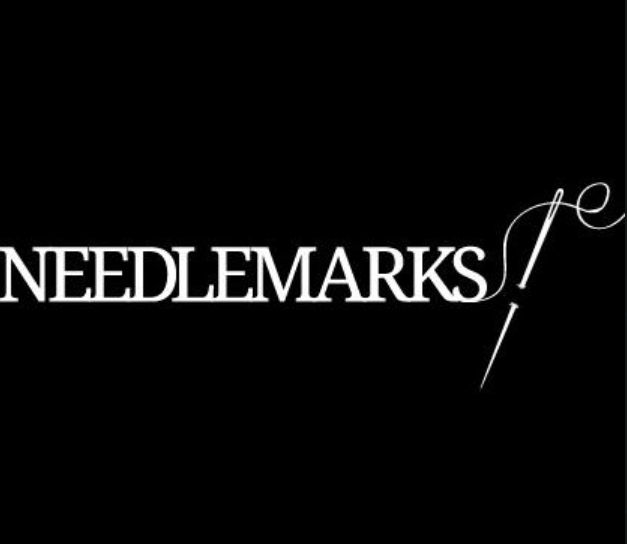
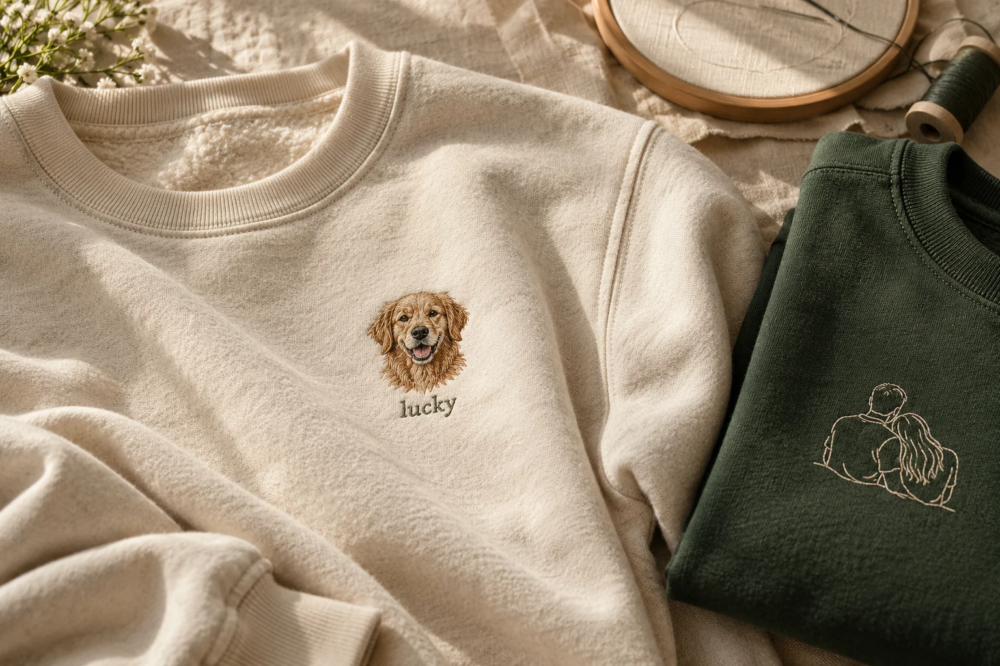
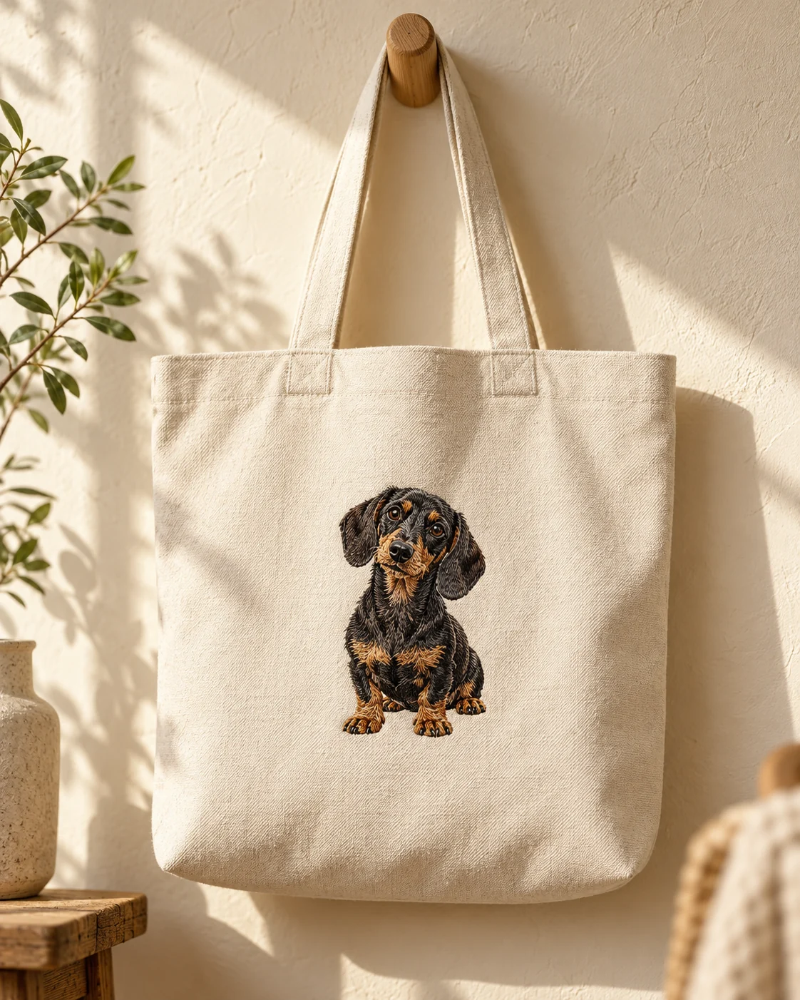

Parçanı seç.
Hikâyene eşlik edecek sweatshirt, şapka veya çantayı bul.

Bir fotoğraf. Bir his. Sadece sana ait bir parça.
En sevdiğin anı, ilmek ilmek yanında taşı.

Sevdiğin insanlar, minik dostların, unutamadığın anlar.
Hikâyene en çok yakışan parçayı bul.
Başka bir arama dene veya tüm koleksiyona göz at.
Bu koleksiyon bir tasarım demosudur. Görseller yapay zekâ ile üretilmiş örneklerdir; fiyatlar temsilidir.

MADE PERSONAL. MADE TO KEEP.Bazen tek bir kareye koca bir dünya sığar. Birlikte büyüdüğün dostun, ilk buluşmanız, dönüp dönüp baktığın o an…
NEEDLEMARKS, o kareyi gündelik hayatının bir parçasına dönüştürme fikriyle tasarlandı. Çünkü en güzel parçalar, bir hikâyesi olanlar.
Senin hikâyen hangisi?Hikâyene eşlik edecek sweatshirt, şapka veya çantayı bul.
Sevdiğin fotoğrafı yükle. Rengini, bedenini ve küçük notunu ekle.
Fotoğrafının nakşa dönüşeceği kişiye özel parçanı hayal et.
Yüzün veya nakışa dönüşmesini istediğin detayın net göründüğü, aydınlık bir fotoğraf seç. Görsel kalitesi tasarımın detaylarını doğrudan etkiler.
Bu site tasarım ve alışveriş akışını göstermek için hazırlanmıştır. Sepeti deneyebilirsin; gerçek sipariş oluşturulmaz ve ödeme alınmaz.
Bu demoda fotoğraf yalnızca tarayıcında önizlenir; sunucuya yüklenmez ve kalıcı olarak saklanmaz. Sayfayı yenilediğinde yeniden seçmen gerekir.